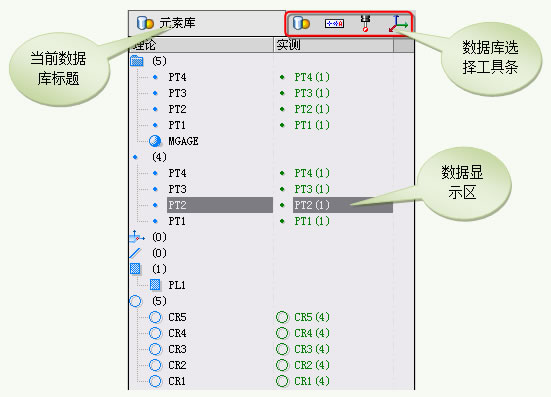
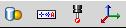
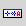
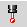
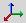
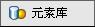

|
数据库区用来显示工程中的数据及提供用户维护工程数据的接口。VISUAL DMIS 系统数据库主要包含了四种数据对象：元素、公差、测头、坐标系。数据库区虽然会根据数据对象的不同可能有所变化，但大体都包含三部分，如图2-61所示： 
图2-61
- 数据库选择工具条 
该工具条用来选择需要操作的数据库。单击工具将在数据显示区显示相应的数据库数据。该工具条包含四个工具：元素 、公差 、 侧头 、坐标系 。
- 数据库类型 
该区域用图标表示当前数据显示区的数据类型。
- 数据显示区
该区域以树型结构显示数据库的数据并根据数据库的不同提供各种快捷菜单。关于数据库的操作请参看下面各小节不同数据库的详细介绍。
测量元素数据库 公差数据库 测头数据库 坐标系数据库
|